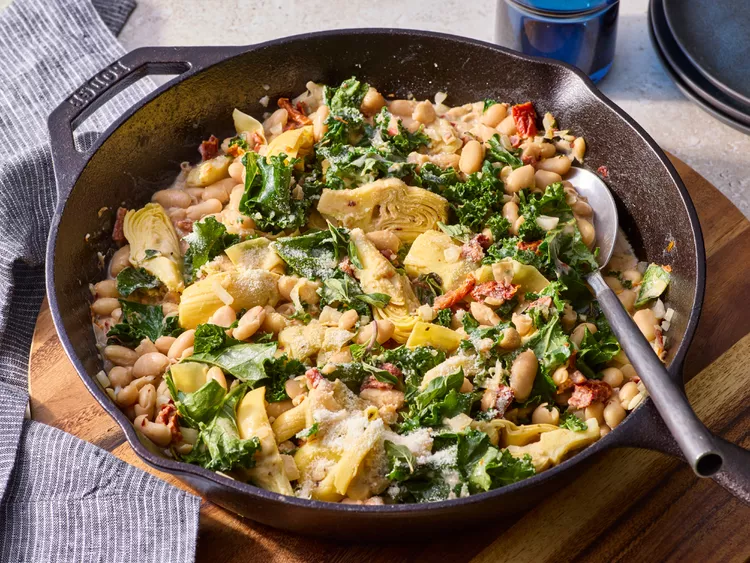

Creamy Tuscan White Bean Skillet

"Description"
This creamy Tuscan white bean skillet is a flavorful dish featuring tender
beans,
artichoke hearts, and bright sun-dried tomatoes coated in a
creamy sauce with Parmesan cheese.
A vegetarian-friendly main dish
or side, it has the feel of comfort food, elevated beyond simple beans.
"Ingredients"
- 1 tablespoon olive oil
- 1/2 cup chopped onion
- 2 cloves garlic, minced
- 2 (15 ounce) cans cannellini beans, rinsed and drained
- 1 (14.5 ounce) can artichoke hearts, drained
- 1/2 cup oil-packed sun-dried tomatoes, chopped
- 1 tablespoon chopped fresh oregano, plus more for garnish
- 1/2 teaspoon crushed red pepper
- 1/2 teaspoon freshly ground black pepper
- 1/4 teaspoon salt
- 1/2 cup vegetable broth
- 1/2 cup heavy cream
- 4 cups torn kale or spinach
- 1/3 cup grated Parmesan cheese
"Steps"
-
Gather all ingredients.

-
Heat oil in a deep large skillet over medium heat. Add onion; cook
until softened,
about 4 minutes. Add garlic and cook 30 seconds
more.

-
Add beans, artichoke hearts, sun-dried tomatoes, oregano, crushed red
pepper,
black pepper, and salt to the skillet; stir to combine.

-
Pour in broth and cream; bring to a simmer and cook until lightly
thickened, stirring occasionally, 5 minutes.

-
Add kale and reduce heat to low. Cook until kale begins to soften,
stirring often, 2 to 3 minutes longer. Remove from the heat.

-
Sprinkle the cheese over the beans and stir; garnish with additional
chopped fresh oregano.

Home